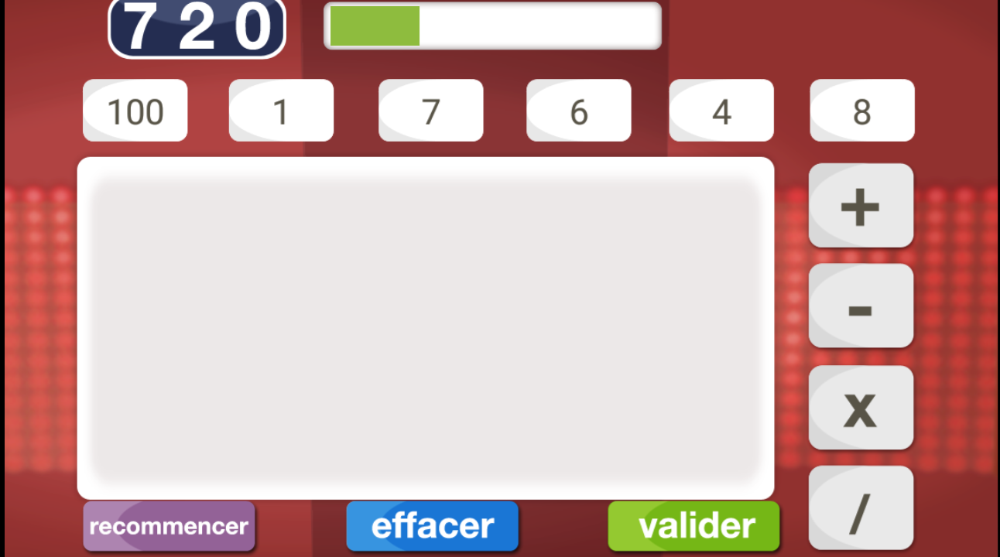

Acceuil
Sommaire
- l'histoire du jeu
- concept du jeu
- explication du programme
- Difficultés rencontrées
L'histoire du jeu
•L’émission est composée de 3 types d’épreuves :
•1.Le Compte est bon
•2.Le Mot le plus long
•3.Les duels
•J'ai programmer la première partie du jeu qui est «Le Compte est bon».
concept du jeu
•Donner, de façon aléatoire, à l’utilisateur 6 entiers naturelsentre 1 et 75, et un grand nombre (100 <࠵?< 1000)comme cible (nombre à viser).•Trouver la meilleure combinaison d’opérations élémentaires(Addition,Soustraction,Multiplication,Division) entre les 6 chiffres donnés.
•Afficher le résultat (image ci-contre).Video extrait du vrai jeux des Des_chiffres_et_des_lettres
Image de reference du vrai jeu


Pour ceux qui veulent voir la description du code détaillée et les difficultés rencontrées cliquez ici